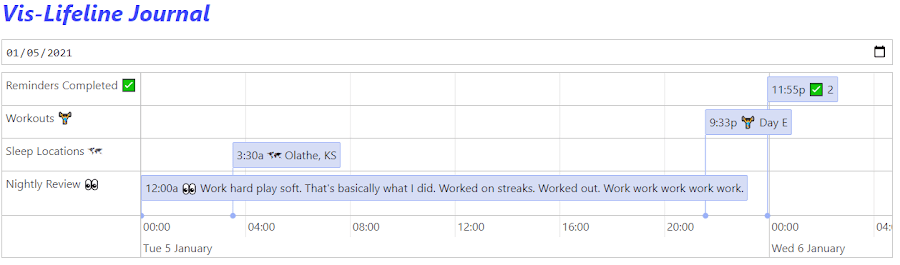
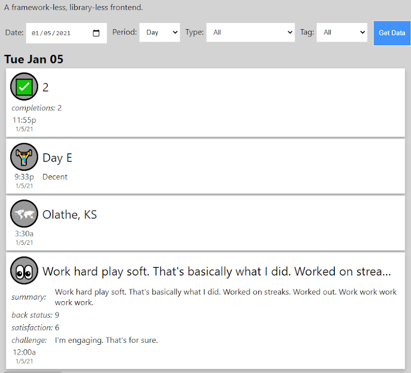
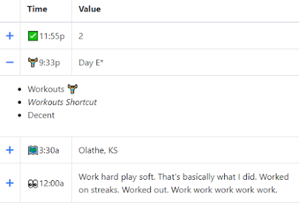

…A… MOVIE!
AND WE’RE BACK
After a 15 month hiatus with no new mainline MCU1 content, last Friday I got to hear the Marvel Cinematic Universe theme play once again. I wasn’t emotionally prepared to walk back into some sense of excited normalcy after having been living the pandemic life for a year. I was on my couch, nonchalantly pressed play, and literally froze when I heard the theme. I was very close to getting chills, just in anticipation of what would come next.
Transfixed, I watched for the next hour or so, through the first two episodes of “WandaVision”. I’ve been really enjoying the show, and disappointed with the reaction to it I’ve seen from some of my friends & acquaintances. It’s weird. It’s not what you were expecting. Maybe it’s not what you were hoping for; but it’s different. It is what it is and I like that it’s genuinely treading new ground in the MCU. I can’t wait to see how it plays out.
Morning Routine
For the past 7 3/4th years, I have had a nightly journaling/quantified self routine. I write a few sentences about my day into a journal, form, or some other data-input mechanism I’ve constructed, and it is appended to a running log of journal entries (among other data).
Surprisingly, despite being able to consistently complete a nightly ritual for 400+ weeks, I have never had an equivalent morning-time ritual lasting more than a month or two. I’ve had various ones come and go. I would get up and work out. I would get up and knock out some coding class lessons. I would get up and write. But… nothing stuck. Nothing had staying power.
I hereby commit to a new morning routine: following the 2-Minute Rule of habit change, using the support of habit-tracking, I will begin each morning by looking at my “Page of the Week” page in Notion, where I will review any previous notes/plans and establish one intention for the day. Perhaps which frog I will eat, or a mantra for the day, or simply a reminder to be the best husband/father/friend I can be.
Data Journal 10
I’ve sort of began in earnest working on a 10th iteration of my Google Sheets-based Life Tracking System. Why? Well, partially, at this point it just feels like catching up with an old friend. I have learned so much about what I want, what’s technically possible, and what works best over the past 9 iterations. Another large part of the motivation for making it is that I want to see how easy I can make the whole process for other folks to pick up. I want to make the thing shareable. See the Top 5 for some more specifics about how it will work2
Closed Rhyming Pairs & A Poem
I recently stumbled across the concept of a closed rhyming pair - a pair of words in the English language that only rhyme with each other. Looking through the list, I developed an itch to write something using pairs of closed rhyming pairs. This is what I wrote.
Scrutiny or Mutiny?
I’m just a lonely yachtsman, out here on the sea.
My crew, only Scotsmen, talk Scottish about me.
Alas, English and Spanish comprise my lexicon menu.
I wouldn’t have this problem if they were from a Mexican venue.
Their affection I would cherish most chiefly.
Without them I would perish quite briefly.
It could be because I was previously a minister,
but their talking about me sounds so deviously sinister.
Is it that I got that doorway from Sydney?
Or that I went to Norway for a kidney?
Is it that I dated the sharpest violinist,
and the harpist that was the thinnest?
Is it that I use deodorant so cheaply and sparsely?
Or perhaps how incredibly deeply I love parsley?
Is it off-putting, the pigment of my clothing?
Or am I only imagining this figment of loathing?
To my first mate Finis, I handed a nice cold beverage.
I thought with a Guinness, some good favor I could leverage.
He said: “bear witness, as a captain you’ve done beautifully.
Perfect fitness for the job, which you’ve performed dutifully.
But if you do not want our situation to worsen, my president.
Stop calling me a Scottish person - I’m an Irish resident.
It’s not perfect. But it’s mine.
Top 5: Data Journal 10 Features
5. A Data Manifest
When you track things for long enough, you’ll find that what you want to keep track of may ebb and flow. So, how do you handle tracking the things you’re tracking? A data manifest - that’s how. The new Data Journal iteration is going to be fully-centered around the concept of the Data Manifest. The manifest will describe each measure, what it contains, where the data are located, and other information about its granularity, default values, et cetera.
4. Write REST API
One thing I’ve built that I now value highly is the ability to receive and track data sent via web requests. This opens up a lot of automation possibilities. Things like IFTTT or Siri Shortcuts or Tasker (on Android) are quite capable of sending arbitrary datasets to web URLs according to a wide variety of triggering events.
3. Read REST API
This one is not quite as important as the ability to write to the web, but spreadsheets aren’t always the best user experience. I’ve already made a few iterations of user interfaces that I can port over with essentially no retooling to be hosted via a Google Apps Script Webapp. I want to make the two means of interaction with the data equally viable.
I present, exhibits A, B, & C:
A: a Vis.JS timeline

B: a sort of card-based UI, using no frameworks or libraries at all

C: A simple table using Bootstrap Tables

2. Support for Granularity Levels from One Second to One Year
One of the biggest reasons for my departure from the long-running “Life Tracker Version 7” was the inability to track data that are relevant several times a day. This limitation made things like tracking medicines impractical and needlessly interjected weird proxy factors into my quantified self data. Example: I could only say I watched at least some TV 60 days out of 2019… but I couldn’t tell you how many shows I watched per day. Doing things like counting unique shows becomes more cumbersome when “Modern Family”, “Community”, “Modern Family, Community”, and “Community, Modern Family” are counted as 4 unique strings, rather than 2 unique shows.
However my plunge into “everything down to the lowest level of granularity” is also not really ideal, either.
1. Sharability
I really want to make something that others can use and learn from. They can learn about themselves, and they can learn about coding and spreadsheets and whatnot. It turns out being good at that stuff can take you to some pretty neat places.
Quote:
Let’s watch Grippy!. My son, asking for a children’s TV show featuring a guy named “Blippi”